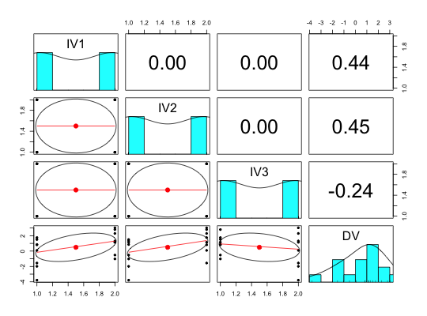
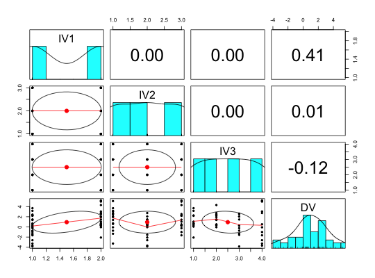
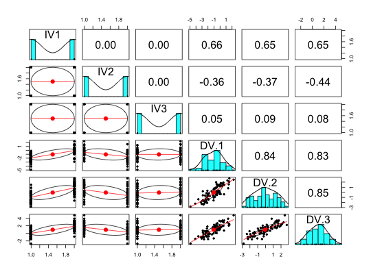

For teaching basic statistics, it is useful to be able to generate examples suitable for analysis of variance or simple linear models. sim.anova will generate the design matrix of three independent variables (IV1, IV2, IV3) with an arbitrary number of levels and effect sizes for each main effect and interaction. IVs can be either continuous or categorical and can have linear or quadratic effects. Either a single dependent variable or multiple (within subject) dependent variables are generated according to the specified model. The repeated measures are assumed to be tau equivalent with a specified reliability.
sim.anova(es1 = 0, es2 = 0, es3 = 0, es12 = 0, es13 = 0, es23 = 0, es123 = 0, es11=0,es22=0, es33=0,n = 2,n1 = 2, n2 = 2, n3 = 2, within=NULL,r=.8,factors=TRUE,center = TRUE,std=TRUE)
| es1 | Effect size of IV1 |
|---|---|
| es2 | Effect size of IV2 |
| es3 | Effect size of IV3 |
| es12 | Effect size of the IV1 x IV2 interaction |
| es13 | Effect size of the IV1 x IV3 interaction |
| es23 | Effect size of the IV2 x IV3 interaction |
| es123 | Effect size of the IV1 x IV2 * IV3 interaction |
| es11 | Effect size of the quadratric term of IV1 |
| es22 | Effect size of the quadratric term of IV2 |
| es33 | Effect size of the quadratric term of IV3 |
| n | Sample size per cell (if all variables are categorical) or (if at least one variable is continuous), the total sample size |
| n1 | Number of levels of IV1 (0) if continuous |
| n2 | Number of levels of IV2 |
| n3 | Number of levels of IV3 |
| within | if not NULL, then within should be a vector of the means of any repeated measures. |
| r | the correlation between the repeated measures (if they exist). This can be thought of as the reliablility of the measures. |
| factors | report the IVs as factors rather than numeric |
| center | center=TRUE provides orthogonal contrasts, center=FALSE adds the minimum value + 1 to all contrasts |
| std | Standardize the effect sizes by standardizing the IVs |
A simple simulation for teaching about ANOVA, regression and reliability. A variety of demonstrations of the relation between anova and lm can be shown.
The default is to produce categorical IVs (factors). For more than two levels of an IV, this will show the difference between the linear model and anova in terms of the comparisons made.
The within vector can be used to add congenerically equivalent dependent variables. These will have intercorrelations (reliabilities) of r and means as specified as values of within.
To demonstrate the effect of centered versus non-centering, make factors = center=FALSE. The default is to center the IVs. By not centering them, the lower order effects will be incorrect given the higher order interaction terms.
y.df is a data.frame of the 3 IV values as well as the DV values.
Independent variables 1 ... 3
If there is a single dependent variable
If within is specified, then the n within subject dependent variables
The general set of simulation functions in the psych package sim
set.seed(42) data.df <- sim.anova(es1=1,es2=.5,es13=1) # one main effect and one interaction describe(data.df)#> vars n mean sd median trimmed mad min max range skew kurtosis se #> IV1* 1 16 1.50 0.52 1.5 1.50 0.74 1.00 2.00 1.0 0.00 -2.12 0.13 #> IV2* 2 16 1.50 0.52 1.5 1.50 0.74 1.00 2.00 1.0 0.00 -2.12 0.13 #> IV3* 3 16 1.50 0.52 1.5 1.50 0.74 1.00 2.00 1.0 0.00 -2.12 0.13 #> DV 4 16 0.49 1.85 1.0 0.62 1.63 -3.78 3.03 6.8 -0.67 -0.45 0.46# summary(lm(DV~IV1*IV2*IV3,data=data.df))#> #> Call: #> lm(formula = DV ~ IV1 * IV2 * IV3, data = data.df) #> #> Residuals: #> Min 1Q Median 3Q Max #> -0.8966 -0.3917 0.0000 0.3917 0.8966 #> #> Coefficients: #> Estimate Std. Error t value Pr(>|t|) #> (Intercept) 1.1798 0.5803 2.033 0.076503 . #> IV11 -1.9469 0.8207 -2.372 0.045093 * #> IV21 0.1076 0.8207 0.131 0.898974 #> IV31 -4.0620 0.8207 -4.949 0.001122 ** #> IV11:IV21 2.6342 1.1607 2.269 0.052933 . #> IV11:IV31 6.0582 1.1607 5.220 0.000803 *** #> IV21:IV31 2.0421 1.1607 1.759 0.116556 #> IV11:IV21:IV31 -3.3524 1.6415 -2.042 0.075397 . #> --- #> Signif. codes: 0 ‘***’ 0.001 ‘**’ 0.01 ‘*’ 0.05 ‘.’ 0.1 ‘ ’ 1 #> #> Residual standard error: 0.8207 on 8 degrees of freedom #> Multiple R-squared: 0.8952, Adjusted R-squared: 0.8035 #> F-statistic: 9.764 on 7 and 8 DF, p-value: 0.002274 #>summary(aov(DV~IV1*IV2*IV3,data=data.df))#> Df Sum Sq Mean Sq F value Pr(>F) #> IV1 1 9.749 9.749 14.473 0.005204 ** #> IV2 1 10.337 10.337 15.346 0.004435 ** #> IV3 1 2.890 2.890 4.290 0.072097 . #> IV1:IV2 1 0.918 0.918 1.362 0.276751 #> IV1:IV3 1 19.202 19.202 28.507 0.000695 *** #> IV2:IV3 1 0.134 0.134 0.199 0.667572 #> IV1:IV2:IV3 1 2.810 2.810 4.171 0.075397 . #> Residuals 8 5.389 0.674 #> --- #> Signif. codes: 0 ‘***’ 0.001 ‘**’ 0.01 ‘*’ 0.05 ‘.’ 0.1 ‘ ’ 1set.seed(42) #demonstrate the effect of not centering the data on the regression data.df <- sim.anova(es1=1,es2=.5,es13=1,center=FALSE) # describe(data.df)#> vars n mean sd median trimmed mad min max range skew kurtosis se #> IV1* 1 16 1.50 0.52 1.5 1.50 0.74 1.00 2.00 1.0 0.00 -2.12 0.13 #> IV2* 2 16 1.50 0.52 1.5 1.50 0.74 1.00 2.00 1.0 0.00 -2.12 0.13 #> IV3* 3 16 1.50 0.52 1.5 1.50 0.74 1.00 2.00 1.0 0.00 -2.12 0.13 #> DV 4 16 0.49 1.85 1.0 0.62 1.63 -3.78 3.03 6.8 -0.67 -0.45 0.46# #this one is incorrect, because the IVs are not centered summary(lm(DV~IV1*IV2*IV3,data=data.df))#> #> Call: #> lm(formula = DV ~ IV1 * IV2 * IV3, data = data.df) #> #> Residuals: #> Min 1Q Median 3Q Max #> -0.8966 -0.3917 0.0000 0.3917 0.8966 #> #> Coefficients: #> Estimate Std. Error t value Pr(>|t|) #> (Intercept) 1.1798 0.5803 2.033 0.076503 . #> IV11 -1.9469 0.8207 -2.372 0.045093 * #> IV21 0.1076 0.8207 0.131 0.898974 #> IV31 -4.0620 0.8207 -4.949 0.001122 ** #> IV11:IV21 2.6342 1.1607 2.269 0.052933 . #> IV11:IV31 6.0582 1.1607 5.220 0.000803 *** #> IV21:IV31 2.0421 1.1607 1.759 0.116556 #> IV11:IV21:IV31 -3.3524 1.6415 -2.042 0.075397 . #> --- #> Signif. codes: 0 ‘***’ 0.001 ‘**’ 0.01 ‘*’ 0.05 ‘.’ 0.1 ‘ ’ 1 #> #> Residual standard error: 0.8207 on 8 degrees of freedom #> Multiple R-squared: 0.8952, Adjusted R-squared: 0.8035 #> F-statistic: 9.764 on 7 and 8 DF, p-value: 0.002274 #>summary(aov(DV~IV1*IV2*IV3,data=data.df)) #compare with the lm model#> Df Sum Sq Mean Sq F value Pr(>F) #> IV1 1 9.749 9.749 14.473 0.005204 ** #> IV2 1 10.337 10.337 15.346 0.004435 ** #> IV3 1 2.890 2.890 4.290 0.072097 . #> IV1:IV2 1 0.918 0.918 1.362 0.276751 #> IV1:IV3 1 19.202 19.202 28.507 0.000695 *** #> IV2:IV3 1 0.134 0.134 0.199 0.667572 #> IV1:IV2:IV3 1 2.810 2.810 4.171 0.075397 . #> Residuals 8 5.389 0.674 #> --- #> Signif. codes: 0 ‘***’ 0.001 ‘**’ 0.01 ‘*’ 0.05 ‘.’ 0.1 ‘ ’ 1#now examine multiple levels and quadratic terms set.seed(42) data.df <- sim.anova(es1=1,es13=1,n2=3,n3=4,es22=1) summary(lm(DV~IV1*IV2*IV3,data=data.df))#> #> Call: #> lm(formula = DV ~ IV1 * IV2 * IV3, data = data.df) #> #> Residuals: #> Min 1Q Median 3Q Max #> -2.0018 -0.3397 0.0000 0.3397 2.0018 #> #> Coefficients: #> Estimate Std. Error t value Pr(>|t|) #> (Intercept) 3.4260 0.7844 4.367 0.000207 *** #> IV11 -2.7790 1.1093 -2.505 0.019434 * #> IV20 -3.0489 1.1093 -2.748 0.011190 * #> IV21 -1.2009 1.1093 -1.083 0.289778 #> IV3-1 -1.5254 1.1093 -1.375 0.181825 #> IV31 -4.4713 1.1093 -4.031 0.000488 *** #> IV33 -5.1016 1.1093 -4.599 0.000115 *** #> IV11:IV20 1.5126 1.5689 0.964 0.344596 #> IV11:IV21 1.3254 1.5689 0.845 0.406549 #> IV11:IV3-1 3.2038 1.5689 2.042 0.052272 . #> IV11:IV31 6.1556 1.5689 3.924 0.000639 *** #> IV11:IV33 8.5233 1.5689 5.433 1.4e-05 *** #> IV20:IV3-1 2.1234 1.5689 1.353 0.188512 #> IV21:IV3-1 1.1223 1.5689 0.715 0.481280 #> IV20:IV31 1.3930 1.5689 0.888 0.383389 #> IV21:IV31 2.2484 1.5689 1.433 0.164711 #> IV20:IV33 1.5838 1.5689 1.010 0.322782 #> IV21:IV33 1.5504 1.5689 0.988 0.332899 #> IV11:IV20:IV3-1 -2.6968 2.2187 -1.215 0.236008 #> IV11:IV21:IV3-1 -1.2671 2.2187 -0.571 0.573237 #> IV11:IV20:IV31 -0.4246 2.2187 -0.191 0.849846 #> IV11:IV21:IV31 -3.3169 2.2187 -1.495 0.147959 #> IV11:IV20:IV33 -2.4872 2.2187 -1.121 0.273368 #> IV11:IV21:IV33 -0.6422 2.2187 -0.289 0.774713 #> --- #> Signif. codes: 0 ‘***’ 0.001 ‘**’ 0.01 ‘*’ 0.05 ‘.’ 0.1 ‘ ’ 1 #> #> Residual standard error: 1.109 on 24 degrees of freedom #> Multiple R-squared: 0.8651, Adjusted R-squared: 0.7359 #> F-statistic: 6.693 on 23 and 24 DF, p-value: 8.495e-06 #>summary(aov(DV~IV1*IV2*IV3,data=data.df))#> Df Sum Sq Mean Sq F value Pr(>F) #> IV1 1 36.11 36.11 29.346 1.45e-05 *** #> IV2 2 32.23 16.12 13.096 0.000143 *** #> IV3 3 10.76 3.59 2.914 0.054955 . #> IV1:IV2 2 0.03 0.01 0.011 0.988728 #> IV1:IV3 3 98.02 32.67 26.549 8.49e-08 *** #> IV2:IV3 6 3.71 0.62 0.502 0.800543 #> IV1:IV2:IV3 6 8.58 1.43 1.162 0.358682 #> Residuals 24 29.54 1.23 #> --- #> Signif. codes: 0 ‘***’ 0.001 ‘**’ 0.01 ‘*’ 0.05 ‘.’ 0.1 ‘ ’ 1pairs.panels(data.df)